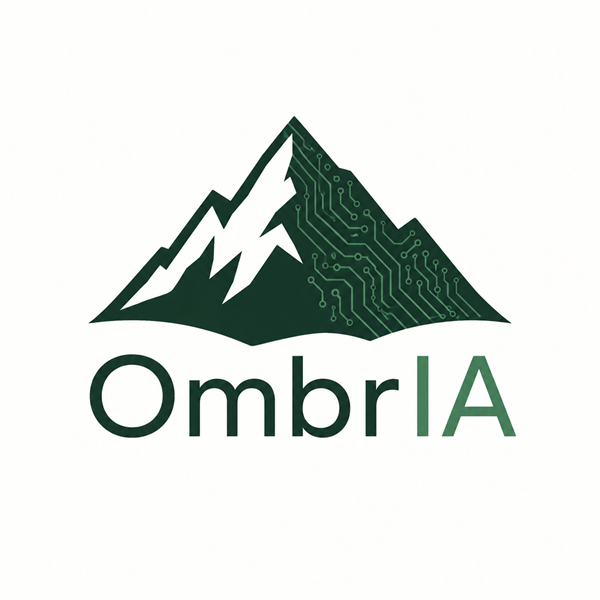
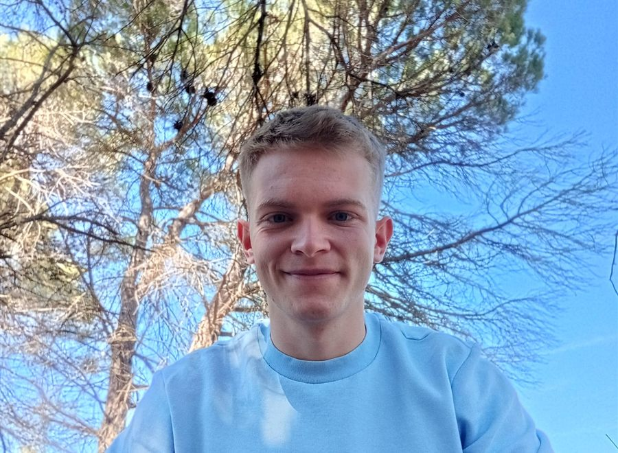

Habla con nosotros
Quién está detrás
Antes de trabajar con inteligencia artificial, trabajé en el monte. Soy Técnico Superior en Gestión Forestal y del Medio Natural, y he trabajado en viveros, desbroces, plantaciones, áreas cortafuegos y apeo con motosierra en España, Francia e Islandia.
Fundé OmbrIA porque el sector forestal se ha quedado al margen de la tecnología y, siendo tan importante, apenas se le ve. Quiero que las empresas forestales tengan las mismas herramientas que cualquier otra empresa y que ganen la visibilidad que merecen.
Como conozco cómo se trabaja en el campo, las soluciones que propongo están pensadas para empresas forestales reales, no para una oficina genérica.
Me centro en tres cosas: automatizar procesos administrativos y de gestión, integrar IA en las operaciones de empresas forestales y crear soluciones a medida, seguras y pensadas para el trabajo de campo.
Cuando hablas con OmbrIA, hablas conmigo: soy quien hace el diagnóstico y quien lo implementa.
Cómo trabajo
Los principios que guían cada solución que diseño y cada relación con mis clientes.
Me centro en el sector forestal porque la IA debe aplicarse con conocimiento real del negocio, no de forma genérica.
Trabajo codo a codo con cada cliente para entender su realidad y diseñar soluciones que funcionen en el día a día.
No se trata de innovar por innovar. Cada solución que propongo tiene que tener un impacto directo y medible en tu negocio.
Vengo del monte y creo en las empresas que lo gestionan. Quiero ser parte de su modernización y de su futuro sostenible.
Trayectoria
Formación forestal y experiencia de campo en tres países antes de fundar OmbrIA.
Marzo – abril 2022
Plantación, siembra, riego y mantenimiento del vivero.
Abril – junio 2022
Desbroce de terreno forestal y plantación de diferentes especies de abetos.
Junio – agosto 2023
Ejecución de áreas cortafuegos para la prevención de incendios, con motosierra y desbrozadora.
Febrero – junio 2024
Apeo con motosierra, desbroce, plantación y mantenimiento de bosques con la Icelandic Forestry Association.
2022 – 2024
Formación en el IES La Creueta.
Octubre 2026
Inteligencia artificial y automatización para empresas forestales, desde Valencia.
Cuéntame tu caso y vemos juntos si la IA puede ayudar a tu empresa forestal. Las llamadas previas al diagnóstico son gratuitas y sin compromiso.